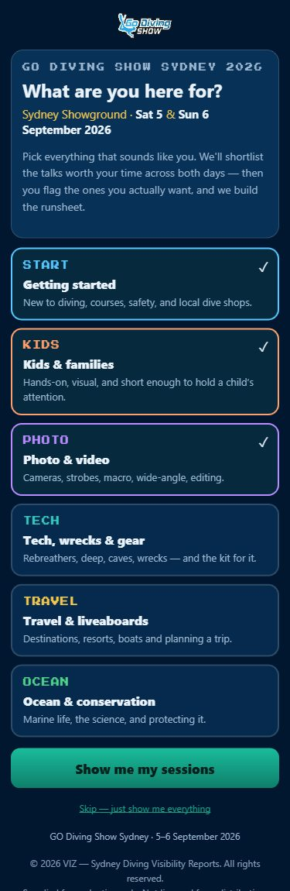
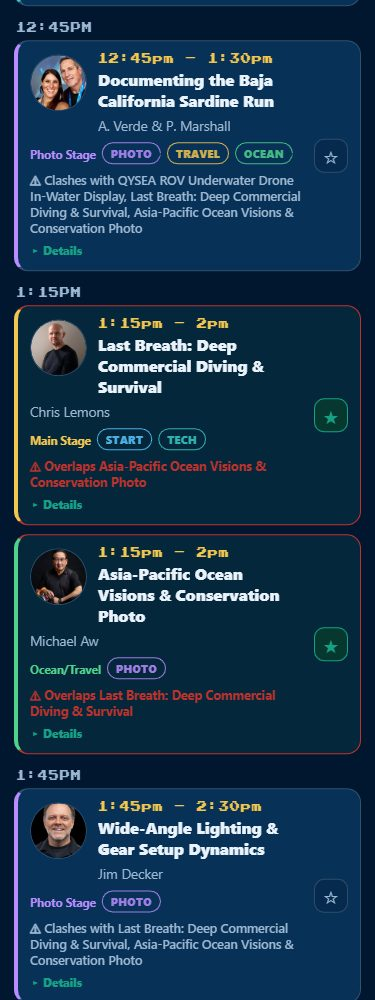
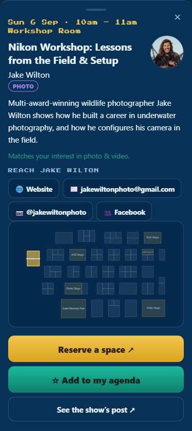
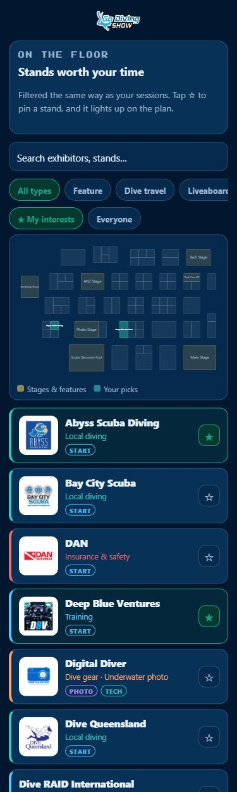
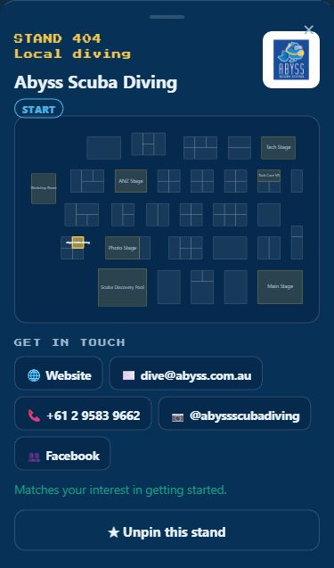
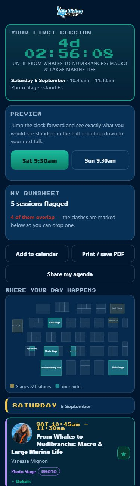
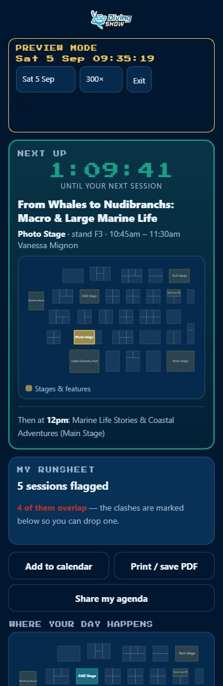
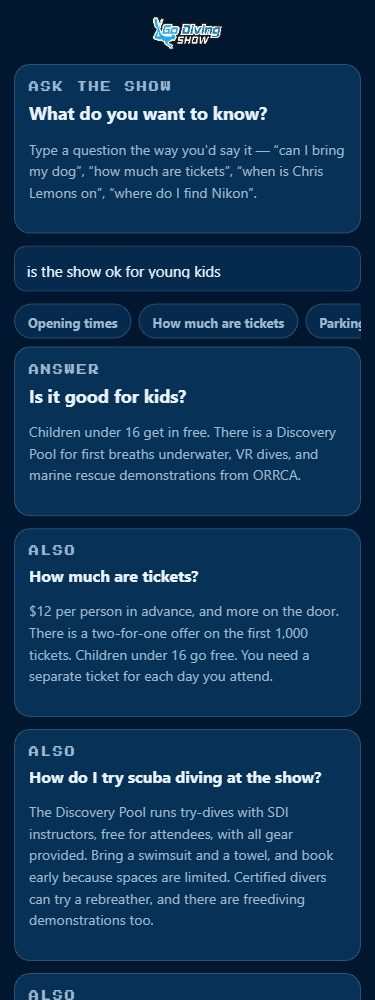

GO Diving Show Sydney · 5–6 September 2026
A phone-first planner that turns the programme into one visitor’s day: pick what you’re into, star the talks and stands you want, and walk in with a runsheet instead of a floorplan.
Nothing to install, no account, no login. It is a web page — one link, works on any phone, and everything a visitor picks is saved on their own device.
Six plain-language choices. This drives everything after it.
A shortlist, not the full grid. Clashes are flagged as you go.
Same filter on the floor, and they light up on the plan.
The countdown to your first talk is already running.
Why now: the value is in visitors planning before they travel — deciding it’s worth the trip, booking the workshops that need booking, and seeing that there is enough for the kids to justify bringing them.
Slide 2 · The first screen

“What are you here for?” Six answers, no diving jargon, no ranking to explain.
Every pick is a filter that runs through the whole app at once: it shortlists the sessions, it shortlists the exhibitors, and it tells the visitor why each one was suggested — “matches your interest in photo & video”.
A visitor who doesn’t want to be filtered taps “skip — just show me everything” and gets the whole programme. Interests can be changed at any point without losing anything already starred.
Slide 3 · Sessions tab
The shortlist is both days, in time order. One tap on the ☆ moves a talk into the visitor’s agenda — there is no separate “save” step.
The moment two starred talks collide, both are outlined in red and each one names the other: “Overlaps Last Breath: Deep Commercial Diving & Survival.” Overlaps between things they haven’t picked stay quiet — it is only a problem when it’s their problem.

Slide 4 · Inside a session

Tapping a talk opens everything a visitor needs to commit to it.
The speaker contacts are worth calling out, because the show website does not carry them. A visitor who wants to follow up on a talk — about a workshop, a trip, a commission — currently has to go and search. Here it is one tap, and the speaker gets the enquiry.
Individuals were held to a stricter line than companies: professional channels only, no personal mobiles or private addresses, nothing guessed from a domain. Where a speaker publishes nothing of their own, the business they work through stands in and the sheet says so.
Every Instagram and booking link is the show’s own — the planner sends traffic to you, it doesn’t hold it.
Slide 5 · Exhibitors tab
“Stands worth your time” — the exhibitor list filtered by the same interests, so a photographer isn’t scrolling past insurance brokers.
Star a stand and it does two things: it joins My Day, and it lights up on the floorplan at the top of the tab. By the time a visitor has picked five stands they are looking at a walking route, not a directory.

Slide 6 · Inside a stand

Each exhibitor carries its stand number, its position on the plan, and a Get in touch block: website, email, phone.
That matters at both ends of the weekend. Before the show, a visitor can ask whether a course runs on the Sunday or whether a camera will be on the stand. After it, the person who meant to go back and buy the regulator still has the number in their pocket — the shortlist they built is a contact list they keep.
Exhibitors are classified from the show’s own categories, so nothing has to be maintained twice.
Slide 7 · My Day tab
The countdown is running now. Not on the day — from the moment a visitor stars their first talk, the top of My Day counts down to it in days, hours, minutes and seconds.
That is the thing a visitor feels for the four weeks before a show, and it was the one place the app used to say nothing. It also names the session, the day, the time, the stage and the stand, so the wait is attached to something specific. On the day it becomes the same countdown to the next talk, using the same clock and the same logic — there is no separate “show-day mode” to switch on.
Below it sits the runsheet: everything starred, in order, across both days, with the clashes counted at the top so they get resolved before the weekend, not in a corridor.
Below the buttons, “where your day happens” maps the whole day onto the floorplan at once.

Slide 8 · Preview mode

Anyone can jump the clock forward. Sat 9:30am or Sun 9:30am, one tap, straight from My Day — this is a visitor feature, not an organiser tool.
The app then runs exactly as it will in the hall: next up, the countdown, the stage, the stand number, the room lit on the plan, and “then at 12pm…” underneath. A gold PREVIEW MODE banner carries the simulated clock, so nobody mistakes it for the real time, and Exit returns to the live countdown.
It runs at 300× by default: a whole show day passes in about two minutes, so a visitor can watch their agenda play out talk by talk instead of staring at a countdown that barely moves. Dropping to 1× shows it behaving in real time.
Two things it earns. Visitors see what the app will actually do for them, so they bother to build the agenda in the first place — and your team can demonstrate the show-day experience to exhibitors and press today, without waiting for September.
Slide 9 · Ask tab
A search box that takes plain English — “can I bring my dog”, “how much are tickets”, “when is Chris Lemons on”, “where do I find Nikon”.
It answers from a written knowledge base about the show: tickets and the under-16s going free, opening times, parking, getting there by train, the Discovery Pool try-dives, accessibility, dogs. It returns the best answer and then the near-misses, because the second answer is often the one they meant.
Suggested questions sit under the box for anyone who doesn’t know what to ask. It runs entirely inside the page — no server, no cost per question, and it cannot invent an answer you didn’t write.
This is the fastest thing on the list to extend: send us your FAQ and inbox questions and they go straight in.

Slide 10 · Proposed addition
Everything above happens on the visitor’s phone. If we add a small amount of anonymous reporting, the same taps become the best pre-show demand signal you have.
How many people opened the planner and how many built an agenda — a live read on interest, week by week, in the run-up.
The split across the six interests. Who is actually coming: families, tech divers, photographers, first-timers.
Stars per talk. Which rooms will overflow, which speakers under-drew, which clashes forced people to choose.
Stars per stand, and which interests drove them. Evidence an exhibitor can be sold on for next year.
How it would work: counts only — no names, no email, no logins, nothing that identifies a visitor. It is an addition, not a change to how the app behaves for visitors. Roughly a day’s work plus somewhere to store the counts, and it would need your sign-off before it goes on.
Slide 11 · Proposed addition
The planner already knows which talks a visitor flagged and when each one ends. That makes it the one place that can ask “how was it?” at the only moment anyone answers honestly — on the way out of the room.
As a starred talk finishes, My Day offers a one-tap rating and an optional line of comment. It is only ever offered for sessions that visitor actually flagged.
Ratings roll up per speaker as well as per talk — useful when the same name appears on both days or on more than one stage.
At the end of the day, and again a few days later for anyone who opens the app, a short form: would you come back, what was missing, was it worth the trip.
Straight into the same organiser dashboard, next to the demand numbers — so each session carries both how many wanted it and how it went.
How it would work: always skippable, never blocking the app, anonymous by default — a rating, an optional comment, no name and no email unless a visitor volunteers one for follow-up. Free-text comments would be yours to moderate before anyone sees them. Like the dashboard, it needs somewhere to store the responses and your written sign-off on what is collected.
Slide 12 · Where it stands
The planner is built and running against the real 2026 programme — every screenshot in this deck is the live app, not a design.
One link, no app store, no sign-up. Every day it is out is a day of visitors deciding to come, booking the workshops that need booking, and bringing the kids.
Slide 13 · Ownership and terms
This deck and the application it describes are shared with the GO Diving Show organising team so that it can be assessed. Sharing it is not a transfer of anything.
© 2026 VIZ — Sydney Diving Visibility Reports. All rights reserved. The application, its source code, its interface design, its interest taxonomy and classification logic, its floorplan rendering, its knowledge base and this presentation (together, the “Work”) are the property of VIZ and remain so.
A right to view and evaluate the Work, internally, for the purpose of deciding whether to proceed. Nothing more.
Any of the above requires a separate written agreement with VIZ.
Each published build carries an identifying reference in the page source (as an HTML
comment and a data-build attribute). It has no function; it exists so that a
copy taken from this build can be identified as having originated here. It must not be
removed, and the build reference should not be published.
Session times, speaker biographies and photographs, exhibitor names, logos, descriptions and floorplan geometry remain the property of the GO Diving Show ANZ, Rork Media, and the individual speakers and exhibitors concerned. They are reproduced here for demonstration purposes. Commercial use of the Work requires their permission in addition to an agreement with VIZ.
As it stands the planner collects nothing: every choice a visitor makes is stored on their own device and never leaves it. The organiser dashboard on slide 10 would be the first thing to send any data at all, it would be anonymous counts only, and it would not be switched on without written agreement on what is collected and who holds it.
This slide records intent. It is not legal advice and is not a substitute for a signed agreement drafted by a qualified lawyer.
© 2026 VIZ — Sydney Diving Visibility Reports. All rights reserved. Prepared for the GO Diving Show Sydney organising team. Supplied for evaluation only; not licensed for redistribution, republication or reuse.